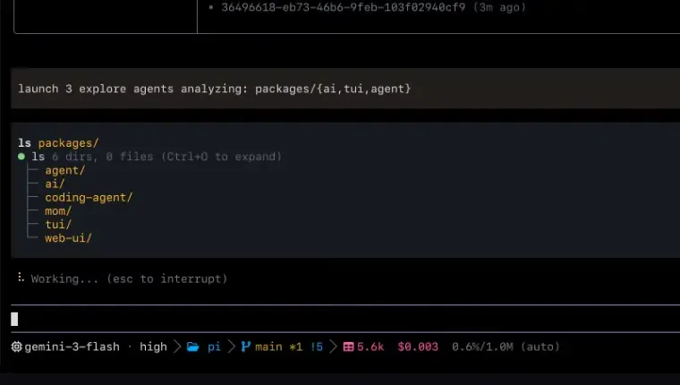

The shell, search, glob and find run in-process, no fork for a single call.
Where the external binaries are missing the agent is blind, and where they exist every call is a fork. Mars links the real implementations, ripgrep, glob, find and a bash with sessions, into one binary alongside thirty-six built-in tools.
